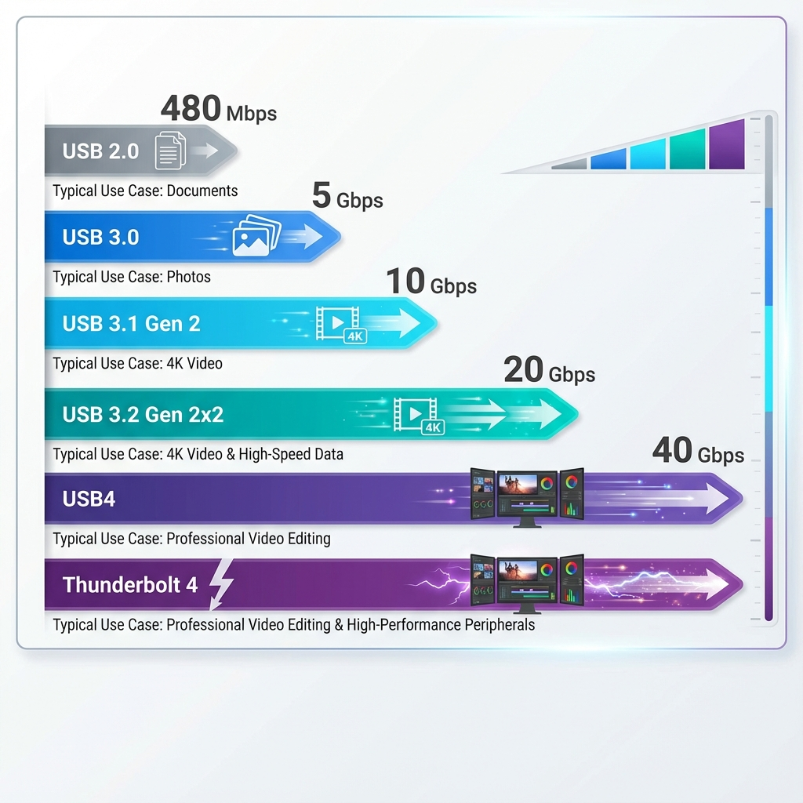

第 3 章：USB 传输协议 (USB Transfer Protocols)¶
USB 协议决定了数据传输的速度。然而,由于 USB-IF (USB 开发者论坛) 多次更改命名规则,导致市场上存在大量混淆的名称,这也是消费者购买 USB 设备时最容易踩坑的地方。
为什么 USB 速度如此重要?¶
在购买 USB 设备时,您可能经常遇到这样的困惑:
- 价格差异巨大:为什么有的 U 盘只要 20 元,有的却要 200 元?
- 速度天差地别:为什么同样是 Type-C 接口,传输速度差别可达 100 倍?
- 命名令人迷惑:"USB 3.2 Gen 2x2" 这种名字到底是什么意思?
- 实际体验差:为什么标称"高速"的设备,传文件还是很慢?
真实场景举例:
- 📱 备份手机照片(20GB):
- USB 2.0 U 盘:需要约 10 分钟
- USB 3.2 Gen 2 U 盘:只需约 30 秒
- 🎬 传输 4K 视频素材(100GB):
- USB 2.0 移动硬盘:需要约 50 分钟
- USB4 SSD:只需约 30 秒
速度差异不仅影响效率,更直接影响您的使用体验和时间成本。本章将帮您理清 USB 速度标准的来龙去脉,避免踩坑。
[!IMPORTANT] USB 速度 ≠ USB 接口形态。一个 Type-C 接口可能只支持 USB 2.0 速度(480Mbps),也可能支持 USB4(40Gbps)。购买时务必同时确认接口类型和传输协议版本。
USB 速度演进历史¶
timeline
title USB 传输协议发展史
1996 : USB 1.0 发布 : Low Speed 1.5Mbps : 用于键盘鼠标
1998 : USB 1.1 : Full Speed 12Mbps : 首个广泛应用版本
2000 : USB 2.0 发布 : High Speed 480Mbps : 统治市场 10+ 年
2008 : USB 3.0 规范 : SuperSpeed 5Gbps : 蓝色接口标识\u003cbr\u003e速度提升 10 倍
2013 : 首次改名混乱 : USB 3.0 → USB 3.1 Gen 1 : 引发命名争议
2017 : USB 3.1 Gen 2 : 10Gbps : 双倍速度提升
2017 : USB 3.2 发布 : 20Gbps : 需要 Type-C 双通道
2019 : 第二次改名 : USB 3.x 全线更名 : 混乱达到顶峰
2019 : USB4 发布 : 基于 Thunderbolt 3 : 40Gbps 统一协议
2021 : USB4 v2.0 : 80Gbps/120Gbps : 未来发展方向早期 USB 标准¶
USB 1.0 / 1.1 (1996-2000)¶
- Low Speed: 1.5 Mbps
- 应用: 键盘、鼠标、游戏手柄
- 特点: 低功耗,适合简单输入设备
- Full Speed: 12 Mbps
- 应用: 打印机、扫描仪、早期摄像头
- 特点: 当时的"全速",但以今天标准看已经很慢
USB 2.0 (2000)¶
- High Speed: 480 Mbps (理论值约 60 MB/s)
- 实际速度: 约 30-40 MB/s
- 应用场景:
- 📱 大部分"仅充电线"的数据传输上限
- 📱 入门级手机的数据接口(如 iPhone 15 基础版)
- 🖱️ 无线鼠标接收器、蓝牙适配器
- ⌨️ 机械键盘、USB 声卡
- 现状: 至今仍广泛使用,是最兼容的标准
[!NOTE] USB 2.0 推出至今已有 20+ 年,但仍然是许多设备的默认选择,原因是: - 成本极低(主控芯片便宜) - 兼容性极好 - 对于键盘、鼠标等低速设备完全够用
USB 3.x 命名大乱斗¶
这是最让人头疼的部分。USB-IF 在 2013 年和 2019 年两次更改命名规则,导致市场上同一个标准有多个名字,消费者和厂商都苦不堪言。
为什么要改名?¶
USB-IF 的官方理由: - "统一命名体系,方便消费者识别" - "强调技术代际的延续性" - "避免版本号跳跃式增长"
实际效果: - ❌ 更加混乱,消费者完全分不清 - ❌ 厂商标注五花八门 - ❌ 旧设备名称失效,购买时无法对比
[!WARNING] USB-IF 的改名被业界广泛批评为"史上最糟糕的命名决策之一"。很多厂商干脆不遵守官方命名,使用自己的标注方式。
命名对照表¶
请仔细对照下表,这是识别 USB 3.x 设备的关键:
| 原始名称 (发布时) |
第一次改名 (2013) |
第二次改名 (2019,官方当前名称) |
市场通俗名称 | 理论带宽 | 实际速度 | 编码方式 |
|---|---|---|---|---|---|---|
| USB 3.0 | USB 3.1 Gen 1 | USB 3.2 Gen 1 | USB 3.0 / 5Gbps | 5 Gbps | ~450 MB/s | 8b/10b |
| N/A | USB 3.1 Gen 2 | USB 3.2 Gen 2 | USB 3.1 / 10Gbps | 10 Gbps | ~900 MB/s | 128b/132b |
| N/A | N/A | USB 3.2 Gen 2x2 | USB 3.2 / 20Gbps | 20 Gbps | ~1.8 GB/s | 128b/132b |
[!TIP] 购买建议:忽略官方命名,直接看速度标识: - 🔵 SS 或 5Gbps = USB 3.0 (第一代超高速) - 🔵 SS 10 或 10Gbps = USB 3.1 Gen 2 (第二代超高速) - 🔵 SS 20 或 20Gbps = USB 3.2 Gen 2x2 (双通道超高速)
编码效率详解¶
您可能注意到表格中的"编码方式"一栏。这是决定实际速度的关键因素。
什么是编码?¶
USB 传输数据时,不能直接发送 0 和 1,需要进行线路编码,以确保: - 时钟同步:接收端能准确识别每一位 - 错误检测:发现传输错误 - 信号完整性:避免长时间的高电平或低电平
这导致需要用更多的位来传输更少的数据,产生编码开销。
8b/10b 编码 (USB 3.0)¶
- 原理:每 8 位数据编码为 10 位信号传输
- 有效效率: 8/10 = 80%
- 实际影响:
- 理论带宽 5 Gbps
- 编码后可用: 5 × 0.8 = 4 Gbps (约 500 MB/s)
- 再减去协议开销,实际约 450 MB/s
graph LR
A[原始数据\u003cbr\u003e8 bit] -->|编码| B[传输信号\u003cbr\u003e10 bit]
B -->|占用带宽| C[5 Gbps]
C -->|有效数据| D[4 Gbps\u003cbr\u003e80%]
style A fill:#e1ffe1
style B fill:#ffe1e1
style C fill:#fff4e1
style D fill:#e1f5ff128b/132b 编码 (USB 3.1/3.2)¶
- 原理:每 128 位数据编码为 132 位信号传输
- 有效效率: 128/132 = 97%
- 实际影响:
- 理论带宽 10 Gbps
- 编码后可用: 10 × 0.97 = 9.7 Gbps (约 1.2 GB/s)
- 再减去协议开销,实际约 900 MB/s
编码效率对比:
| 编码方式 | 有效效率 | 10 Gbps 可用带宽 | 提升幅度 |
|---|---|---|---|
| 8b/10b | 80% | 8 Gbps | 基准 |
| 128b/132b | 97% | 9.7 Gbps | +21% |
[!NOTE] USB 3.1 采用 128b/132b 编码,这是速度提升的关键创新之一。编码效率的提升意味着更少的浪费,更快的实际速度。
USB 3.2 Gen 2x2 的双通道技术¶
"2x2" 的含义:
- 2x:双通道(Dual-Lane)
- Gen 2:基于 USB 3.1 Gen 2 技术(10 Gbps/通道)
- 总带宽: 10 Gbps × 2 = 20 Gbps
技术原理:
Type-C 接口有 4 组高速差分对(TX1/RX1 和 TX2/RX2): - 传统 USB 3.x:只使用一组(单通道) - USB 3.2 Gen 2x2:同时使用两组(双通道)
graph TB
A[USB 3.2 Gen 2x2 设备] --> B[Type-C 接口]
B --> C[通道 1\u003cbr\u003eTX1/RX1]
B --> D[通道 2\u003cbr\u003eTX2/RX2]
C --> E[10 Gbps]
D --> F[10 Gbps]
E --> G[总带宽\u003cbr\u003e20 Gbps]
F --> G
style A fill:#e1f5ff
style B fill:#fff4e1
style C fill:#e1ffe1
style D fill:#e1ffe1
style G fill:#ffe1f5[!IMPORTANT] USB 3.2 Gen 2x2 必须使用 Type-C 接口,因为只有 Type-C 才有足够的引脚支持双通道。Type-A 接口物理上无法实现 20 Gbps。
USB4¶
USB4 基于 Intel 捐赠的 Thunderbolt 3 协议构建,旨在统一高速接口标准,终结多年的协议混乱。
基本规格¶
- USB4 Gen 2x2: 20 Gbps (可选)
- USB4 Gen 3x2: 40 Gbps (强制要求)
- 接口: 仅支持 Type-C,不兼容 Type-A
核心特性¶
1. 隧道技术 (Tunneling Protocol)¶
USB4 最大的创新是动态带宽分配,可以在一条线缆上同时传输多种协议:
- USB 3.2 数据传输
- DisplayPort 视频输出
- PCIe 数据(用于外接显卡等)
动态分配示例:
graph LR
A[USB4 40Gbps 总带宽] --> B{动态分配}
B -->|场景1: 纯数据| C[USB 3.2: 40Gbps]
B -->|场景2: 视频+数据| D[DisplayPort: 25Gbps\u003cbr\u003eUSB 3.2: 15Gbps]
B -->|场景3: 外接显卡| E[PCIe: 32Gbps\u003cbr\u003eDisplayPort: 8Gbps]
style A fill:#e1f5ff
style B fill:#fff4e1
style C fill:#e1ffe1
style D fill:#ffe1e1
style E fill:#ffe1ff[!TIP] 这意味着您可以用一根线连接扩展坞,同时传输 4K 视频、USB 数据、网络信号,并为笔记本充电,所有协议共享 40Gbps 带宽。
2. 强大的兼容性¶
USB4 向下兼容: - ✅ USB 3.2(所有版本,包括 Gen 1/Gen 2/Gen 2x2) - ✅ USB 2.0 - ✅ Thunderbolt 3(认证设备必须支持) - ⚠️ Thunderbolt 4(部分支持,取决于设备实现)
兼容性矩阵:
| USB4 设备 | 连接到 | 实际速度 |
|---|---|---|
| USB4 40Gbps 硬盘 | USB4 接口 | 40 Gbps ✅ |
| USB4 40Gbps 硬盘 | USB 3.2 Gen 2 接口 | 10 Gbps ⚠️ |
| USB4 40Gbps 硬盘 | USB 2.0 接口 | 480 Mbps ⚠️ |
| USB 3.2 Gen 2 硬盘 | USB4 接口 | 10 Gbps ✅ |
| Thunderbolt 3 设备 | USB4 接口 | 40 Gbps ✅ |
3. 认证要求严格¶
USB4 设备必须满足: - 最低 40 Gbps 带宽(Gen 3x2) - 支持 USB PD 充电 - 支持 DisplayPort Alt Mode(视频输出) - 支持 Thunderbolt 3 兼容(认证设备)
[!IMPORTANT] USB4 的认证比 USB 3.x 严格得多,这意味着标注"USB4"的设备质量更有保障,不太可能出现"阉割版"。
USB4 vs Thunderbolt 3/4¶
很多人混淆 USB4 和 Thunderbolt,这里明确说明:
| 对比项 | USB4 | Thunderbolt 3 | Thunderbolt 4 |
|---|---|---|---|
| 速度 | 20/40 Gbps | 40 Gbps | 40 Gbps |
| PCIe 支持 | 可选 | 强制(16 Gbps) | 强制(32 Gbps) |
| 视频输出 | 可选 | 必须(1×4K) | 必须(2×4K) |
| 最低 PD 功率 | 7.5W | 15W | 15W |
| 线材长度 | 最长 2m(被动) | 最长 2m(被动) | 最长 2m(被动) |
| 认证机构 | USB-IF | Intel | Intel |
| 标识符 | USB 标志 | ⚡ | ⚡ + 4 |
| 价格 | 中等 | 高 | 更高 |
选择建议: - 🎮 普通用户(数据传输+充电):USB4 足够 - 💻 专业用户(外接显卡、多显示器):Thunderbolt 4 更佳 - 💰 预算有限:USB 3.2 Gen 2 性价比最高
USB4 v2.0 (2022)¶
最新的 USB4 2.0 规范进一步提升速度:
- 80 Gbps(对称双向)
- 120 Gbps(非对称,一个方向 120 Gbps,另一个方向 40 Gbps)
- 应用:8K 显示器、高速存储阵列
现状:截至 2024 年,USB4 2.0 设备尚未大规模上市,仍处于早期阶段。
真实传输速度对比¶
理论速度 ≠ 实际速度。以下是真实环境下的性能对比:
传输速度测试¶
测试条件:传输 10GB 4K 视频文件(单个大文件)
| USB 版本 | 理论带宽 | 编码效率 | 协议开销后 | 实际测速 | 传输 10GB 用时 | 速度评级 |
|---|---|---|---|---|---|---|
| USB 2.0 | 480 Mbps | - | - | 约 35 MB/s | ~4 分 50 秒 | ⭐ |
| USB 3.0 (Gen 1) | 5 Gbps | 80% | 4 Gbps | 约 350 MB/s | ~30 秒 | ⭐⭐⭐ |
| USB 3.1 Gen 2 | 10 Gbps | 97% | 9.7 Gbps | 约 850 MB/s | ~12 秒 | ⭐⭐⭐⭐ |
| USB 3.2 Gen 2x2 | 20 Gbps | 97% | 19.4 Gbps | 约 1.6 GB/s | ~6 秒 | ⭐⭐⭐⭐⭐ |
| USB4 (40Gbps) | 40 Gbps | 97% | 38.8 Gbps | 约 3.2 GB/s | ~3 秒 | ⭐⭐⭐⭐⭐ |
| Thunderbolt 4 | 40 Gbps | 97% | 38.8 Gbps | 约 3.5 GB/s | ~3 秒 | ⭐⭐⭐⭐⭐ |
多文件传输对比¶
测试条件:传输 1000 个小文件(共 5GB)
[!NOTE] 传输大量小文件时,受文件系统开销影响,速度会明显降低:
| USB 版本 | 大文件速度 | 小文件速度 | 速度降幅 |
|---|---|---|---|
| USB 2.0 | 35 MB/s | 15 MB/s | -57% |
| USB 3.0 | 350 MB/s | 120 MB/s | -66% |
| USB 3.1 Gen 2 | 850 MB/s | 250 MB/s | -71% |
| USB4 | 3200 MB/s | 800 MB/s | -75% |
结论: - 大文件传输(视频、镜像文件):充分发挥 USB 速度优势 - 小文件传输(照片、文档):受文件系统限制,速度打折扣 - 优化建议:传输小文件前,先打包成压缩包(如 ZIP)
实际应用场景速度对比¶
场景 1:备份手机照片(5000 张照片,共 20GB)
| USB 版本 | 传输时间 | 体验 |
|---|---|---|
| USB 2.0 | 约 12 分钟 | ❌ 慢,需要等待 |
| USB 3.0 | 约 1.5 分钟 | ✅ 可接受 |
| USB 3.1 Gen 2 | 约 40 秒 | ✅ 快速 |
场景 2:拷贝 4K 电影(单个 50GB 蓝光原盘)
| USB 版本 | 传输时间 | 体验 |
|---|---|---|
| USB 2.0 | 约 25 分钟 | ❌ 非常慢 |
| USB 3.0 | 约 2.5 分钟 | ⚠️ 有些慢 |
| USB 3.1 Gen 2 | 约 1 分钟 | ✅ 快速 |
| USB4 | 约 15 秒 | ✅ 极快 |
场景 3:视频剪辑工作流(直接从外置 SSD 读取 100GB 素材)
| USB 版本 | 4K 视频剪辑 | 8K 视频剪辑 |
|---|---|---|
| USB 2.0 | ❌ 完全无法使用 | ❌ 完全无法使用 |
| USB 3.0 | ⚠️ 勉强可用,卡顿 | ❌ 无法使用 |
| USB 3.1 Gen 2 | ✅ 流畅 | ⚠️ 有些卡顿 |
| USB4 / Thunderbolt 4 | ✅ 完全流畅 | ✅ 流畅 |
如何识别 USB 速度标准¶
购买 USB 设备时,如何快速识别其速度规格?
方法 1:查看标识符¶
USB-IF 定义了官方标识,但并非所有厂商都遵守:
| 标识 | 含义 | 速度 |
|---|---|---|
| SS | SuperSpeed | USB 3.0 (5 Gbps) |
| SS 5 | SuperSpeed 5Gbps | USB 3.0 (5 Gbps) |
| SS 10 或 SS+ | SuperSpeed 10Gbps | USB 3.1 Gen 2 (10 Gbps) |
| SS 20 | SuperSpeed 20Gbps | USB 3.2 Gen 2x2 (20 Gbps) |
| USB 40Gbps 或 USB4 40 | USB4 | USB4 (40 Gbps) |
| ⚡ | Thunderbolt | Thunderbolt 3/4 (40 Gbps) |
| ⚡ 4 | Thunderbolt 4 | Thunderbolt 4 (40 Gbps) |
方法 2:通过颜色识别(仅 Type-A 接口)¶
| 颜色 | 含义 | 速度 |
|---|---|---|
| ⚫ 黑色/白色 | USB 2.0 | 480 Mbps |
| 🔵 蓝色 | USB 3.0 / 3.1 Gen 1 | 5 Gbps |
| 🔵 青色(Teal) | USB 3.1 Gen 2 | 10 Gbps |
| 🔴 红色 | USB 3.2 / 常供电 | 20 Gbps 或特殊功能 |
| 🟡 黄色 | 常供电端口 | 关机仍供电(速度不定) |
[!WARNING] 颜色编码不是强制标准,许多厂商不遵守。仅作参考,最终以产品规格说明为准。
方法 3:查看产品规格说明¶
最可靠的方式是查看产品详情页的规格参数:
U 盘示例:
产品名称: SanDisk Extreme PRO USB 3.2
接口类型: USB Type-A
传输协议: USB 3.2 Gen 2 (10 Gbps) ← 看这里
读取速度: 最高 420 MB/s ← 实际速度更有参考价值
写入速度: 最高 380 MB/s
移动硬盘示例:
产品名称: Samsung T7 移动固态硬盘
接口类型: USB Type-C
传输协议: USB 3.2 Gen 2 (10 Gbps) ← 看这里
读取速度: 最高 1050 MB/s
写入速度: 最高 1000 MB/s
[!TIP] 实际读写速度比理论带宽更重要。理论 10 Gbps ≈ 1250 MB/s,但实际产品能达到 1000 MB/s 已经很优秀。
方法 4:使用测试工具¶
Windows: - 打开"设备管理器" → "通用串行总线控制器" - 查看设备属性中的"速度"字段
macOS: - 打开"系统信息" → "USB" - 查看"速度"一栏(如"最高 10 Gb/s")
专业工具: - USBTreeView (Windows):查看 USB 设备树 - USB Device Tree Viewer:显示详细 USB 信息 - CrystalDiskMark:测试实际读写速度
向下兼容性¶
USB 的最大优势之一是完美的向下兼容,新设备可以在旧接口上使用,只是速度会降低。
兼容性原理¶
graph TB
A[USB4 设备\u003cbr\u003e40Gbps 硬盘] --> B{连接到}
B -->|USB4 接口| C[全速工作\u003cbr\u003e40 Gbps ✅]
B -->|USB 3.2 Gen 2 接口| D[降速工作\u003cbr\u003e10 Gbps ⚠️]
B -->|USB 3.0 接口| E[降速工作\u003cbr\u003e5 Gbps ⚠️]
B -->|USB 2.0 接口| F[大幅降速\u003cbr\u003e480 Mbps ❌]
style A fill:#e1f5ff
style B fill:#fff4e1
style C fill:#e1ffe1
style D fill:#fffacd
style E fill:#ffe4b5
style F fill:#ffe1e1兼容性规则¶
[!IMPORTANT] 最慢的一环决定整体速度。传输速度受以下三个因素中最慢的一个限制: 1. 设备速度(U 盘、硬盘等) 2. 接口速度(电脑的 USB 端口) 3. 线材速度(USB 线的传输能力)
案例分析:
| 设备 | 电脑接口 | 线材 | 实际速度 | 瓶颈 |
|---|---|---|---|---|
| USB4 SSD (40Gbps) | USB4 | USB4 认证线 | 40 Gbps ✅ | 无 |
| USB4 SSD (40Gbps) | USB 3.1 Gen 2 | USB 3.1 线 | 10 Gbps ⚠️ | 接口限制 |
| USB 3.1 Gen 2 硬盘 (10Gbps) | USB4 | USB 2.0 线 | 480 Mbps ❌ | 线材限制 |
| USB 3.0 U 盘 (5Gbps) | USB4 | USB4 线 | 5 Gbps ⚠️ | 设备限制 |
Type-C 的特殊情况¶
Type-C 接口虽然外观相同,但内部支持的协议可能完全不同:
graph LR
A[Type-C 接口\u003cbr\u003e外观相同] --> B[仅 USB 2.0\u003cbr\u003e480Mbps]
A --> C[USB 3.0\u003cbr\u003e5Gbps]
A --> D[USB 3.1 Gen 2\u003cbr\u003e10Gbps]
A --> E[USB 3.2 Gen 2x2\u003cbr\u003e20Gbps]
A --> F[USB4\u003cbr\u003e40Gbps]
A --> G[Thunderbolt 4\u003cbr\u003e40Gbps]
style A fill:#fff4e1
style B fill:#ffe1e1
style C fill:#fffacd
style D fill:#e1ffe1
style E fill:#e1f5ff
style F fill:#e1f5ff
style G fill:#ffe1ff[!CAUTION] 千万不要以为 Type-C = 快速。许多廉价设备的 Type-C 接口只支持 USB 2.0,速度仅 480Mbps,甚至比老式 USB 3.0 Type-A 还慢!
购买建议¶
根据不同使用场景,选择合适的 USB 速度标准。
U 盘选购¶
| 用途 | 推荐速度 | 价格区间 | 代表产品 |
|---|---|---|---|
| 文档存储 | USB 2.0 / 3.0 | ¥20-50 | 闪迪酷豆、金士顿 DT |
| 日常备份 | USB 3.1 Gen 1 (5Gbps) | ¥50-150 | 闪迪 CZ880、金士顿 DT100 G3 |
| 视频/照片 | USB 3.1 Gen 2 (10Gbps) | ¥150-400 | 闪迪至尊超极速、三星 BAR Plus |
| 专业用途 | USB 3.2 Gen 2 或更高 | ¥400+ | 闪迪 Extreme PRO |
选购要点: - ✅ 查看实际读写速度,而非仅看理论带宽 - ✅ 大容量(≥128GB)更划算 - ✅ 选择金属外壳,散热好耐用 - ⚠️ 避免"三无"产品,可能虚标速度
移动硬盘 / 移动 SSD 选购¶
| 用途 | 推荐速度 | 类型 | 价格区间(1TB) |
|---|---|---|---|
| 文件备份 | USB 3.0 (5Gbps) | HDD 机械硬盘 | ¥300-500 |
| 照片/视频 | USB 3.1 Gen 2 (10Gbps) | SATA SSD | ¥500-800 |
| 4K 视频剪辑 | USB 3.2 Gen 2 (10Gbps) | NVMe SSD | ¥800-1500 |
| 8K 视频/专业 | USB4 / Thunderbolt 3/4 | NVMe SSD | ¥1500+ |
关键区别: - HDD 机械硬盘:便宜、容量大,但速度慢(约 150 MB/s),不耐摔 - SATA SSD:速度约 500 MB/s,适合一般用途 - NVMe SSD:速度 1000-3500 MB/s,适合专业用途
[!TIP] 如果您的电脑只有 USB 3.0 接口,购买 USB4 硬盘意义不大,会被接口限速。先确认电脑支持的最高速度再购买。
USB 数据线选购¶
| 用途 | 推荐规格 | 价格区间 | 注意事项 |
|---|---|---|---|
| 仅充电 | USB 2.0 线 | ¥10-30 | 便宜即可 |
| 日常数据传输 | USB 3.0 线 | ¥30-60 | 足够大多数场景 |
| 高速数据传输 | USB 3.1/3.2 线 | ¥60-150 | 查看是否有 SS 10/20 标识 |
| 100W 快充 | USB-C 5A E-Marker 线 | ¥50-150 | 必须有 E-Marker 芯片 |
| 专业/雷电 | Thunderbolt 4 线 | ¥200-500 | 有⚡标识,支持 40Gbps |
线材选购要点: 1. 长度越短越好: - 1 米以内:几乎无损耗 - 1-2 米:略有损耗(可接受) - 3 米以上:速度明显下降,需主动线材(内置芯片)
- 认证标识:
- ✅ USB-IF 认证:可在 usb.org 查询
- ✅ Thunderbolt 认证:带⚡标志
-
⚠️ 无认证线材需谨慎
-
避免混用:
- 充电线(仅有电源线)无法传输数据
- USB 2.0 线会限制 USB 3.x 设备速度
常见问题 FAQ¶
Q1: 为什么我的 USB 3.0 U 盘传输速度很慢?¶
可能原因:
- 使用了 USB 2.0 线材
-
✅ 解决:更换 USB 3.0 线材
-
插入了 USB 2.0 接口
-
✅ 解决:插入蓝色的 USB 3.0 接口
-
U 盘本身性能差
- 许多廉价 U 盘虽标称 USB 3.0,但实际读写速度仅 50-100 MB/s
-
✅ 解决:更换品质更好的 U 盘
-
传输大量小文件
- 文件系统开销大,速度会明显降低
-
✅ 解决:先打包成压缩包再传输
-
驱动程序问题
- Windows 可能未正确识别 USB 3.0 设备
- ✅ 解决:更新主板芯片组驱动
Q2: USB 3.2 Gen 2x2 一定要 Type-C 接口吗?¶
答: 是的,必须使用 Type-C。
原因: - USB 3.2 Gen 2x2 需要双通道传输(2 组 TX/RX 差分对) - Type-A 接口只有 1 组 TX/RX,物理上无法实现双通道 - 只有 Type-C 才有足够的引脚(24 针)支持 2 组高速通道
结论: - Type-A 接口最高支持 USB 3.2 Gen 2(10 Gbps,单通道) - 20 Gbps 及以上速度必须使用 Type-C
Q3: USB4 和 Thunderbolt 4 有什么区别? USB4 设备能用雷电接口吗?¶
核心区别:
| 对比项 | USB4 | Thunderbolt 4 |
|---|---|---|
| 速度 | 最低 20 Gbps(可选 40 Gbps) | 强制 40 Gbps |
| PCIe 支持 | 可选 | 强制(32 Gbps) |
| 视频输出 | 可选 | 强制(2×4K 或 1×8K) |
| 菊花链 | 不要求 | 必须支持(6 设备) |
| 认证严格程度 | 一般 | 非常严格 |
兼容性: - ✅ USB4 设备连接 Thunderbolt 4 接口:可以使用,但可能无法用到 Thunderbolt 特性(如 PCIe 外接显卡) - ✅ Thunderbolt 4 设备连接 USB4 接口:可以使用,但取决于 USB4 接口是否支持 Thunderbolt - ✅ 认证的 USB4 接口:必须支持 Thunderbolt 3
Q4: 我的电脑怎么看 USB 端口是哪个版本?¶
Windows: 1. 右键"此电脑" → "管理" → "设备管理器" 2. 展开"通用串行总线控制器" 3. 查看控制器名称: - "USB 2.0 主机控制器" = USB 2.0 - "USB 3.0 可扩展主机控制器" = USB 3.0+ - "USB4 主机路由器" = USB4
macOS: 1. 点击苹果标志 → → "关于本机" → "系统报告" 2. 选择"USB" 或 "Thunderbolt" 3. 查看端口速度("最高 10 Gb/s"等)
物理识别: - 🔵 蓝色胶芯:通常是 USB 3.0+ - ⚡ 雷电标志:Thunderbolt 接口 - SS 或数字标识:查看端口旁边的标注
Q5: 为什么有的 Type-C 线能传数据,有的不能?¶
线材分类:
- 充电线(Charge-Only Cable)
- 内部只有电源线(VBUS/GND),没有数据线
- ✅ 能充电
- ❌ 不能传输数据
-
价格:¥10-20
-
USB 2.0 数据线
- 有 D+/D- 数据线
- ✅ 能充电 + 传输数据
- ⚠️ 速度仅 480 Mbps
-
价格:¥20-40
-
USB 3.x 全功能线
- 有完整的高速数据引脚
- ✅ 能充电 + 高速数据
- 速度:5-40 Gbps
- 价格:¥50-200+
识别方法: - 查看线材上的标识(SS、5A、10Gbps 等) - 尝试连接电脑,如不能识别设备则可能是充电线 - 购买时查看产品说明,标注"数据传输"
Q6: USB 3.0 向下兼容 USB 2.0,速度会慢吗?¶
答:取决于"谁慢":
场景 1:USB 3.0 设备 → USB 2.0 接口 - 速度会降至 USB 2.0(480 Mbps) - ⚠️ 性能大打折扣
场景 2:USB 2.0 设备 → USB 3.0 接口 - 速度仍是 USB 2.0(480 Mbps) - ✅ 但不会更慢,也无额外损失
场景 3:USB 3.0 设备 + USB 2.0 线材 → USB 3.0 接口 - 速度会降至 USB 2.0(480 Mbps) - ⚠️ 线材成为瓶颈
[!IMPORTANT] 向下兼容不等于"性能无损"。最终速度永远是"最慢一环"决定的。
Q7: 我应该买 USB 3.2 设备还是 USB4 设备?¶
建议思路:
选择 USB 3.2 Gen 2 (10Gbps) 如果: - ✅ 预算有限(便宜 30-50%) - ✅ 电脑只有 USB 3.1/3.2 接口 - ✅ 日常使用(备份照片、视频) - ✅ 传输单个大文件为主
选择 USB4 (40Gbps) 如果: - ✅ 预算充足 - ✅ 电脑支持 USB4 或 Thunderbolt 3/4 - ✅ 专业视频剪辑(4K/8K 素材) - ✅ 需要外接显卡(eGPU) - ✅ 追求未来兼容性
性价比之选: - 💰 USB 3.1 Gen 2 (10Gbps) 移动 SSD 是目前性价比最高的选择,价格适中,速度够用。
总结对照表¶
速度等级快速参考¶
| 名称 | 速度 | 传输 10GB 用时 | 适用场景 | 推荐指数 |
|---|---|---|---|---|
| USB 2.0 | 480 Mbps | ~5 分钟 | 文档、充电 | ⭐⭐ |
| USB 3.0 (Gen 1) | 5 Gbps | ~30 秒 | 日常备份 | ⭐⭐⭐⭐ |
| USB 3.1 Gen 2 | 10 Gbps | ~12 秒 | 照片、视频 | ⭐⭐⭐⭐⭐ |
| USB 3.2 Gen 2x2 | 20 Gbps | ~6 秒 | 4K 视频剪辑 | ⭐⭐⭐⭐ |
| USB4 | 40 Gbps | ~3 秒 | 专业创作 | ⭐⭐⭐⭐⭐ |
| Thunderbolt 4 | 40 Gbps | ~3 秒 | 专业+外设扩展 | ⭐⭐⭐⭐⭐ |
延伸阅读¶
- 官方规范:USB-IF 官方网站
- 认证查询:USB-IF 认证产品查询
- 速度测试工具:CrystalDiskMark、ATTO Disk Benchmark
- 相关章节:
- 第 2 章:USB 接口形态 - 了解不同接口类型
- 第 4 章:Thunderbolt 技术 - 深入了解雷电协议
